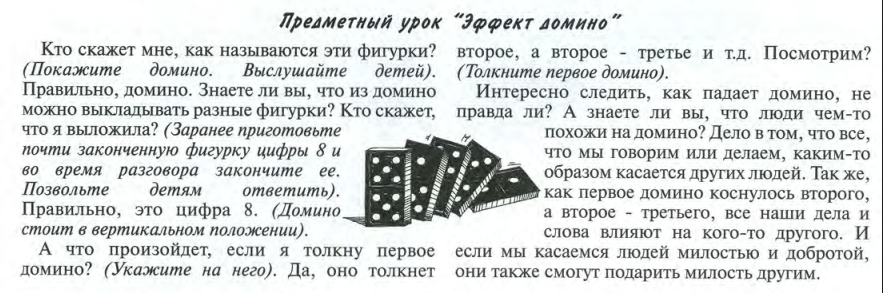

«Блаженны милостивые, ибо им будет оказана милость» Игра с эффектом домино

Пример из жизни(толкнул/обидел тебя кто-то, потом ты обидел другого и
т.д.)
•
•
Как мы можем проявлять милость? Стать «ближним» для каждого нуждающегося в
милосердии.
Прочитать
притчу
«Некоторый человек шёл
из Иерусалима в Иерихон и попался разбойникам,
которые сняли с него одежду, изранили его и ушли, оставив его едва живым. По
случаю один священник шёл тою дорогою и, увидев его,
прошёл мимо. Также и левит, быв на том месте, подошёл, посмотрел и прошёл
мимо. Самарянин же некто, проезжая, нашёл на него и,
увидев его, сжалился. И, подошедши, перевязал ему раны, возливая масло и вино;
и, посадив его на своего осла, привёз его в гостиницу
и позаботился о нём. А на другой
день, отъезжая, вынул два динария, дал содержателю гостиницы и сказал ему:
позаботься о нём; и если
издержишь что более, я, когда возвращусь, отдам тебе. Кто из этих троих,
думаешь ты, был ближний попавшемуся разбойникам? Он сказал: оказавший
ему милость. Тогда Иисус сказал ему: иди, и ты поступай
так же» (Лк. 10: 30–37)
•
Прочитать
притчу
«Царство Небесное подобно царю, который захотел
сосчитаться с рабами своими. Когда начал он считаться, приведён
был к нему некто, который должен был ему десять
тысяч талантов (вес серебра); А так как он не имел, чем заплатить,
Милостивость — это способность сожалеть и помогать другим, быть
сострадательным и открытым, добрым. Это способность отпускать,
миловать людей, снисходить, покрывать, проявлять
незаслуженное
благоволение.
Бог — Сам такой, милостивый.
«Щедр и милостив Господь, долготерпелив и многомилостив: не
до
конца гневается, и не вовек негодует. Не по беззакониям нашим сотворил
нам, и не по грехам нашим воздал нам: ибо как высоко небо над землею,
так велика милость Господа к боящимся Его» (Пс.
102, 8-11)
(Золотой стих для маленьких 1 часть.)
Оказать милость — помочь другому человеку — значит, преодолеть
себя, оставить свои дела и заботы, чтобы принять на себя чужие боль
и горе.
Милосердие также - это умение прощать, проявить
милость и
любовь к тому, кто не смог сделать этого в отношении тебя лично.
то государь его приказал продать его, и жену его, и детей,
и всё, что он имел, и заплатить. Тогда раб тот пал, и кланяясь ему, говорил:
Государь! Потерпи на мне, и я всё тебе заплачу. Государь, умилосердившись над
рабом тем, отпустил его и долг простил ему. Раб же тот, выйдя,
нашёл одного из товарищей
своих, который должен был ему сто динариев, и,
схватив его, душил, говоря: отдай мне, что должен.
Тогда товарищ его пал к ногам его, умолял его и говорил: потерпи на мне, и всё
отдам тебе. Но тот не захотел, а пошёл и посадил его
в темницу, пока не отдаст долга. Товарищи его, видев происшедшее, очень
огорчились, и, придя, рассказали государю своему всё бывшее. Тогда государь
его призывает его и говорит: злой раб! Весь долг тот
я простил тебе, потому что ты упросил меня. Не надлежало ли и тебе помиловать
товарища твоего, как и я помиловал тебя? И, разгневавшись, государь отдал
его истязателям, пока не отдаст ему всего долга. Так и Отец Мой Небесный поступит с вами, если не простит каждый из вас от сердца своего брату своему согрешений
его» (Мф. 18: 23–35)
Задайте вопросы: Что сделал царь должнику? От чего огорчились его друзья?
«суд без
милости не оказавшим милости». (Иак. 2:13)
«Как хотите, чтобы с вами поступали люди, так поступайте
и вы с ними» (Матф.7:12)
Здесь кроется
самая большая трудность. Как быть милостивым к тому, кто нанес обиду, оскорбил
или обманул? Думаю, что многие согласятся с тем, что бессмысленно таить обиду,
желать отомстить. Лучше просто забыть все и быть равнодушным к обидчику. Но
будет ли это милостью? «Любите врагов ваших, благословляйте
проклинающих вас, благотворите ненавидящим вас и молитесь за обижающих вас и
гонящих вас», — говорит нам Господь, — «да будете сынами Отца вашего
Небесного, ибо Он повелевает солнцу Своему восходить над злыми и добрыми и
посылает дождь на праведных и неправедных» (Мф. 5, 44-45).
Христос не сказал
— «забудьте о врагах ваших», но призвал нас ответить милостью и любовью на зло
и обиды. Достижимо ли это для нас? Достижимо. Не в одну секунду или мгновение.
Но все же достижимо.
• Силу творить милость ближнему
нам дает переживание в душе милости Божией, обращенной к нам лично. Т.к. и мы осознаем, что сами слабы
(вспомни 1-заповедь блаженства, что говорил мытарь - «Боже милостив будь ко мне
грешному»)
И как учит Иисус,
человек имеющий милостивое сердце не может
несчастливым. Такой человек внутри своей души найдет сокровища вечной жизни, Божьего Царства, сам познает милость,
которая будет явлена ему Богом!
Еще раз провести игру с эффектом домино и сделать выводы с учетом
услышанного урока.
2 разных вывода:
- отрицательный: когда тебя обидели, ты несешь это в
сердце и обижаешь другого и т.д.
- положительный: Бог – 1-ая «доминошка»,
запускает проявленную к тебе милость, а ты уже милуешь другого и т.д.
Благотворительная душа будет насыщена, и кто напояет
других, тот и сам напоен будет» (Притч.11:25)
•
У милости не должно быть причин: я являю милость не потому, что

нуждающийся ее заслужил, а
именно потому, что он нуждается в
ней. Также никто
не может заслужить милость Божию! Он нас
милует, потому что Сам милостивый и любящий! И этого ожидает от
нас, т.к. мы Его дети!
Господь говорит, что милостивые сами будут помилованы. Они
будут иметь милость Божью в сердце(не потому, что
Бог «отмеряет»
милость по бартеру, ты помиловал и тогда и тебя помилуют) а
потому что ты, не оказывая милости нуждающемуся в ней,
и сам
будешь не готов/не способен увидеть/пережить/принять милость
обращенную к тебе. Не видя нужды ближнего в милости, ты сам не
переживаешь нужды в милости Божьей!
•
* За милость к ближнему, сам получишь милость от Бога; за милость
временную — милость вечную, за милость малую — милость
бесконечно великую: ибо удостоишься не только помилования на суде
Божием, но и получишь вечное блаженство.